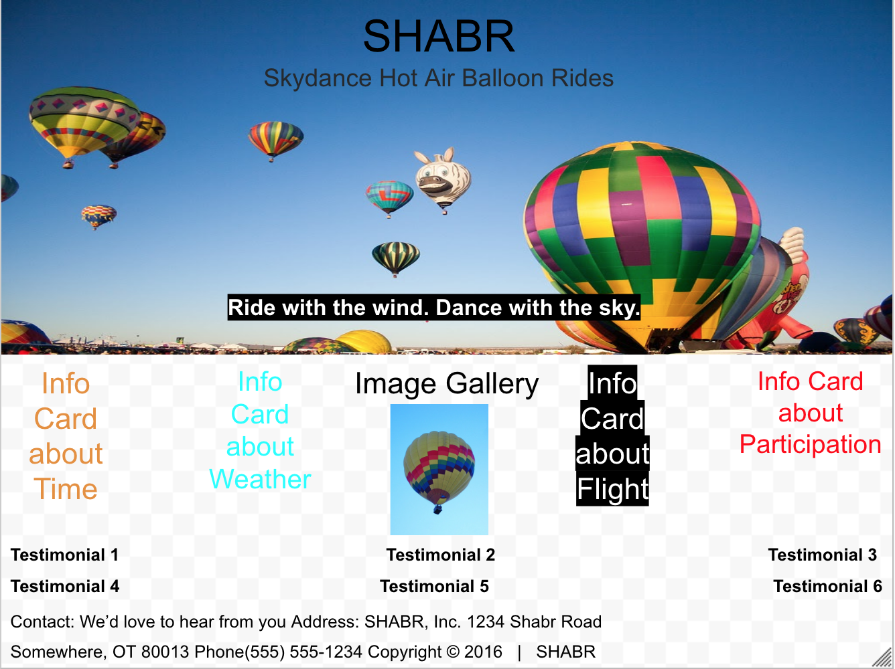

This project was a test to see how well I could create a website using the pieces I learned from Bootstrap. As for what we were also given, we started out with a template that would require us to make a website about a hot air balloon location. We were also given a rubric that required us to use Grid components, at least 6 Bootstrap pieces, custom styles, media queries, and use all of the text given in raw.txt. Over the course of two weeks, I was able to create a website that included every one of those elements and you could see noticeable points where I not only use Bootstrap pieces, but also Grid, media queries, and custom styles. If there is one thing that I would have changed to make it look better was to make the website more visually appealing as it is mostly white and a little bit bland. Overall, the websie came out exactly like I imagined it and I feel like I did a great job making this website using all the tools given.
This was my initial design for the website.
